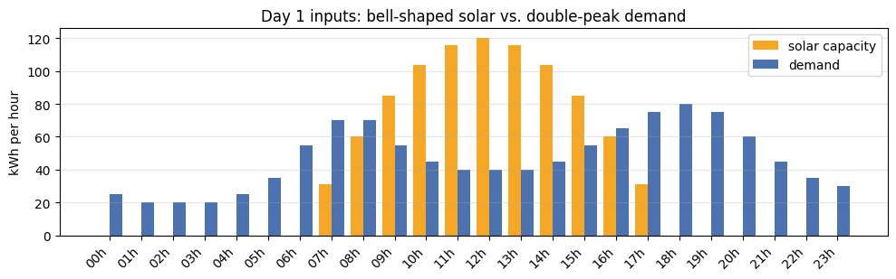
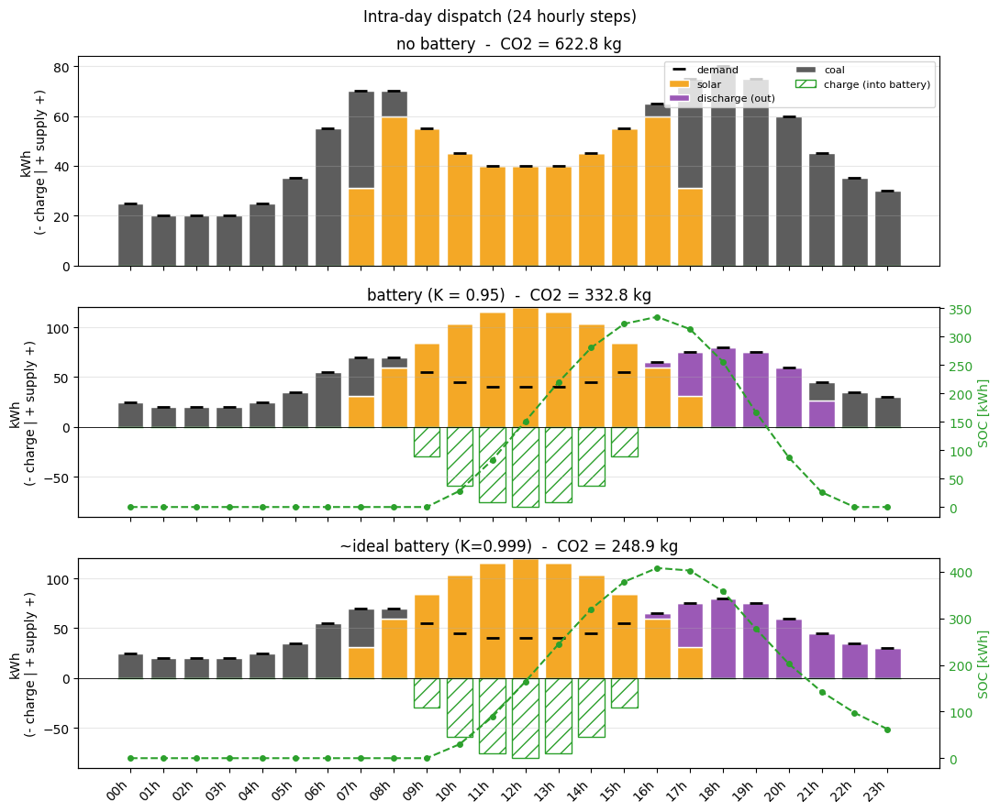
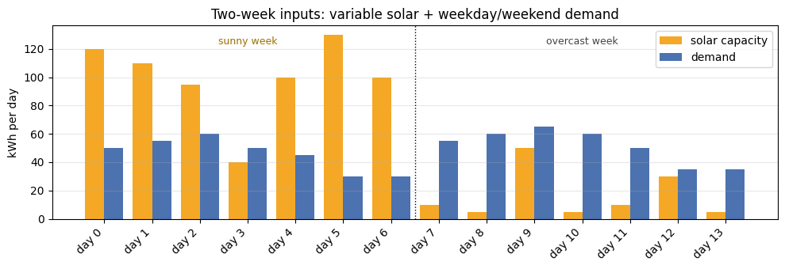
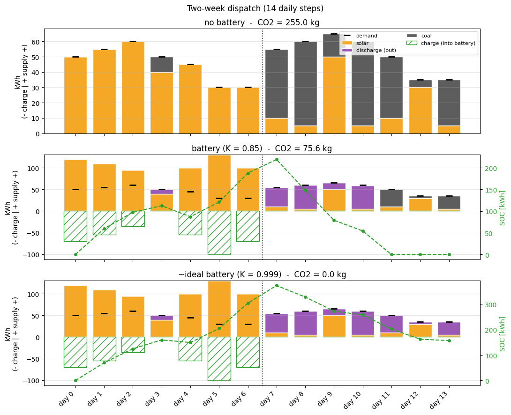

Time-dependent toy example#
Two illustrative dispatch problems on the same toy database, demonstrating the
time-indexed formulation in pulpo.utils.time_extension:
One day, hourly resolution — bell-shaped solar peaking at noon, demand with morning and evening peaks. Battery is used for intra-day shifting.
Two weeks, daily resolution — variable solar (sunny days, cloudy days, a few breaks in the overcast week) and a weekday/weekend demand pattern. Battery is used for multi-day propagation across the horizon.
Storage logic at a glance#
Each storage technology is split into four virtual activities sharing one intermediate product (the charge product):
Activity |
Ref. product |
Inputs |
Role |
|---|---|---|---|
|
|
1 kWh electricity |
Pumps electricity into storage |
|
|
1 unit |
In-step carrier of stored energy |
|
|
1 unit |
Releases electricity from storage |
|
|
— (phantom) |
Bridges across timesteps via |
CHARGE and HOLD produce the same product charge_product; PULPO’s
choices mechanism unifies them into a single virtual supplier feeding
DISCHARGE. The phantom HOLD t-1 produces holdtm1_product; its scaling at
\(t\) is locked at 0, but the engine adds a carry-over supply equal to
\(K \cdot (\text{charge\_product produced at } t{-}1)\). Because
holdtm1_product is a stored product, its time-balance is the inequality
The storage spec passed to PULPO is
storage = [(battery_holdtm1, "charge_product", K)]
# (target_product, source_product, factor)
K = 1.0 is lossless, K < 1.0 lossy, K = None disables storage.
import bw2data as bd
import matplotlib.pyplot as plt
import numpy as np
import pandas as pd
from pulpo import pulpo_time
from pulpo.datasets.elec_time_database import (
setup_elec_time_db,
PROJECT_NAME, DB_NAME,
SOLAR_KEY, COAL_KEY,
BATTERY_CHARGE_KEY, BATTERY_HOLD_KEY,
BATTERY_DISCHARGE_KEY, BATTERY_HOLDTM1_KEY,
CHARGE_PRODUCT_CHOICE,
)
setup_elec_time_db()
bd.projects.set_current(PROJECT_NAME)
db = bd.Database(DB_NAME)
solar = next(a for a in db if a.key == SOLAR_KEY)
coal = next(a for a in db if a.key == COAL_KEY)
charge = next(a for a in db if a.key == BATTERY_CHARGE_KEY)
hold = next(a for a in db if a.key == BATTERY_HOLD_KEY)
discharge = next(a for a in db if a.key == BATTERY_DISCHARGE_KEY)
holdtm1 = next(a for a in db if a.key == BATTERY_HOLDTM1_KEY)
GWP100 = str(("GWP", "100a"))
[elec_time_toy] project='elec_time_toy_bw25', db='elec_time_toy_db', activities=6, methods=[('GWP', '100a')]
Example 1 — One day, hourly resolution#
24 hourly steps. Solar follows a bell curve peaking at 120 kWh at noon (zero before sunrise and after sunset). Demand has the classic double-peak shape: quiet at night, a morning ramp, a midday plateau, and a strong evening peak.
The storage role here is short-term: charge midday surplus to cover the evening peak.
# 24 hourly steps; bell-shaped solar, double-peak demand
time_steps_h = list(range(24))
step_labels_h = [f"{t:02d}h" for t in time_steps_h]
solar_cap_h = {t: v for t, v in enumerate([0.0, 0.0, 0.0, 0.0, 0.0, 0.0, 0.0, 31.1, 60.0, 84.9, 103.9, 115.9, 120.0, 115.9, 103.9, 84.9, 60.0, 31.1, 0.0, 0.0, 0.0, 0.0, 0.0, 0.0])}
demand_kwh_h = {t: v for t, v in enumerate([25, 20, 20, 20, 25, 35, 55, 70, 70, 55, 45, 40, 40, 40, 45, 55, 65, 75, 80, 75, 60, 45, 35, 30])}
x = np.arange(24)
width = 0.4
fig, ax = plt.subplots(figsize=(10, 3.2))
ax.bar(x - width/2, [solar_cap_h[t] for t in time_steps_h], width,
label="solar capacity", color="#f4a826")
ax.bar(x + width/2, [demand_kwh_h[t] for t in time_steps_h], width,
label="demand", color="#4c72b0")
ax.set_xticks(x); ax.set_xticklabels(step_labels_h, rotation=45, ha="right")
ax.set_ylabel("kWh per hour")
ax.set_title("Day 1 inputs: bell-shaped solar vs. double-peak demand")
ax.legend(loc="upper right"); ax.grid(axis="y", alpha=0.3)
fig.tight_layout(); plt.show()

kwargs_h = dict(time_steps=time_steps_h, step_labels=step_labels_h,
solar_cap=solar_cap_h, demand_kwh=demand_kwh_h)
df_h_none = solve_scenario("no battery", K=None, **kwargs_h)
df_h_lossy = solve_scenario("battery (K = 0.95)", K=0.95, **kwargs_h)
df_h_ideal = solve_scenario("~ideal battery (K=0.999)", K=0.999, **kwargs_h)
for df in (df_h_none, df_h_lossy, df_h_ideal):
print(f" {df.attrs['label']:25s} total CO2 = {df.attrs['total_co2']:7.2f} kg")
Creating time-indexed instance
Time-indexed instance created
optimal solution found: 622.8
Optimization problem solved using Highspy
Creating time-indexed instance
Time-indexed instance created
optimal solution found: 332.8151255356928
Optimization problem solved using Highspy
Creating time-indexed instance
Time-indexed instance created
optimal solution found: 248.9
Optimization problem solved using Highspy
no battery total CO2 = 622.80 kg
battery (K = 0.95) total CO2 = 332.82 kg
~ideal battery (K=0.999) total CO2 = 248.90 kg
plot_dispatch([df_h_none, df_h_lossy, df_h_ideal],
time_steps_h, step_labels_h, demand_kwh_h,
title="Intra-day dispatch (24 hourly steps)")

Discussion — what the optimizer is doing#
No battery (622.8 kg). Solar alone covers the midday plateau. The morning ramp, the entire night, and especially the strong evening peak (16h–22h) are served by coal — the bulk of the emissions sit in the evening hours when there is no sun left.
Lossy battery, K = 0.95 (332.8 kg). The optimizer stores the whole solar surplus of 09h–15h and discharges it from 16h on. Every hour held costs 5 %, so the stored energy runs out at 21h and coal serves the last hours of the evening.
Nearly ideal battery, K = 0.999 (248.9 kg). Same intra-day shape, but the stored surplus now lasts until midnight. The night and the morning before sunrise still run on coal: the battery starts the day empty.
Why K = 0.999 and not 1.0? With a lossless battery, running 1 kWh of coal at 03h, charging it and discharging it at 06h emits exactly as much CO₂ as running that coal at 06h. The LP then has many equally good dispatches, and a solver may return one with pointless charge/discharge cycles. A tiny loss makes every round trip cost something and singles out the dispatch without them.
Example 2 — Two weeks, daily resolution#
14 daily steps. Solar mostly follows a sunny / overcast pattern with realistic variability: a partly cloudy day in week 1 and two short sunny breaks in week 2. Demand drops on weekends (days 5–6 and 12–13).
The storage role here is multi-step propagation: the optimizer must transport
week-1 surplus across many days to cover week-2 demand — feasible only because
HOLD recycles charge_product from one step to the next, paying a factor of
K each time.
# 14 daily steps; varied solar + weekday/weekend demand
time_steps_d = list(range(14))
step_labels_d = [f"day {t}" for t in time_steps_d]
solar_cap_d = {t: v for t, v in enumerate([120, 110, 95, 40, 100, 130, 100, 10, 5, 50, 5, 10, 30, 5])}
demand_kwh_d = {t: v for t, v in enumerate([50, 55, 60, 50, 45, 30, 30, 55, 60, 65, 60, 50, 35, 35])}
x = np.arange(14)
width = 0.4
fig, ax = plt.subplots(figsize=(10, 3.5))
ax.bar(x - width/2, [solar_cap_d[t] for t in time_steps_d], width,
label="solar capacity", color="#f4a826")
ax.bar(x + width/2, [demand_kwh_d[t] for t in time_steps_d], width,
label="demand", color="#4c72b0")
ax.axvline(6.5, color="k", linestyle=":", linewidth=1)
ymax = max(max(solar_cap_d.values()), max(demand_kwh_d.values()))
ax.text(3.0, ymax * 0.95, "sunny week", ha="center", fontsize=9, color="#a07000")
ax.text(10.0, ymax * 0.95, "overcast week", ha="center", fontsize=9, color="#444")
ax.set_xticks(x); ax.set_xticklabels(step_labels_d, rotation=45, ha="right")
ax.set_ylabel("kWh per day")
ax.set_title("Two-week inputs: variable solar + weekday/weekend demand")
ax.legend(loc="upper right"); ax.grid(axis="y", alpha=0.3)
fig.tight_layout(); plt.show()

kwargs_d = dict(time_steps=time_steps_d, step_labels=step_labels_d,
solar_cap=solar_cap_d, demand_kwh=demand_kwh_d)
df_d_none = solve_scenario("no battery", K=None, **kwargs_d)
df_d_lossy = solve_scenario("battery (K = 0.85)", K=0.85, **kwargs_d)
df_d_ideal = solve_scenario("~ideal battery (K = 0.999)",K=0.999, **kwargs_d)
for df in (df_d_none, df_d_lossy, df_d_ideal):
print(f" {df.attrs['label']:30s} total CO2 = {df.attrs['total_co2']:7.2f} kg")
Creating time-indexed instance
Time-indexed instance created
optimal solution found: 255.0
Optimization problem solved using Highspy
Creating time-indexed instance
Time-indexed instance created
optimal solution found: 75.61739504764356
Optimization problem solved using Highspy
Creating time-indexed instance
Time-indexed instance created
optimal solution found: 0.0
Optimization problem solved using Highspy
no battery total CO2 = 255.00 kg
battery (K = 0.85) total CO2 = 75.62 kg
~ideal battery (K = 0.999) total CO2 = 0.00 kg
plot_dispatch([df_d_none, df_d_lossy, df_d_ideal],
time_steps_d, step_labels_d, demand_kwh_d,
separators=(6.5,),
title="Two-week dispatch (14 daily steps)")

Discussion — what the optimizer is doing#
No battery (255.0 kg). Week-1 sunny days (mostly 100–130 kWh of solar) cover their own demand and waste the surplus; the cloudy day (
day 3, 40 kWh) and almost the whole of week 2 must be filled by coal. The two short sunny breaks in week 2 (day 9,day 12) only nibble at the deficit.Lossy battery, K = 0.85 (75.6 kg). The optimizer stores the surplus of every sunny week-1 day (
day 0–2,day 4–6) and spends it on the cloudyday 3and in week 2. Week 2 has nothing to store: even its sunny breaks stay below demand. Every day held costs 15 % (energy carried fromday 6today 10keeps \(0.85^{4} \approx 52\,\%\)), so the stored energy is used up onday 10and coal coversday 11–13.Nearly ideal battery, K = 0.999 (0.0 kg). The week-1 surplus alone covers all of week-2 demand, so coal is fully eliminated. The state of charge climbs through week 1 (with a dip on the cloudy
day 3) and decays through week 2, the textbook seasonal-storage shape.
The contrast between the two K values shows the value of the HOLD activity
explicitly: it is the only mechanism that lets charge_product propagate
across non-adjacent timesteps, and the K factor turns each step held into a
real economic cost (otherwise the optimizer would be indifferent to when it
charges).